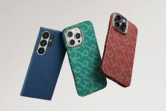

There are different types of mobile accessories, some of them are protective cases which decrease the chance of users breaking their mobile device. These are primarily for phones and tablets. Some protective cases allow you to fold them so you can display your phone or tablet up so it's easier to watch something. Another accessory are headphones. They can come in two types, one that can be plugged into your device and one that can be connected to your device via bluetooth. Another type of mobile accessory is a power bank which is used to help charge your mobile device from anywhere. They are rechargeable and can be used on most devices from anywhere. They are helpful as they allow users to have a longer time on their device.

Mobile accessories can and are used in many different ways and for many different things. Although this is true they all share something in common and that is improving the time that users are on their devices by making it easier to do certain things such as a powerbank which allows users to use their device for a prolonged period of time. They also improve accessibility. An example of this is phone mounts which allow users who may be in a wheelchair or have a difficult time seeing the screen be able to see the screen in whatever way they want by being able to change the height and distances of the phone mount.list of links to a vbariety of websites that sell the best mobile phone accesories